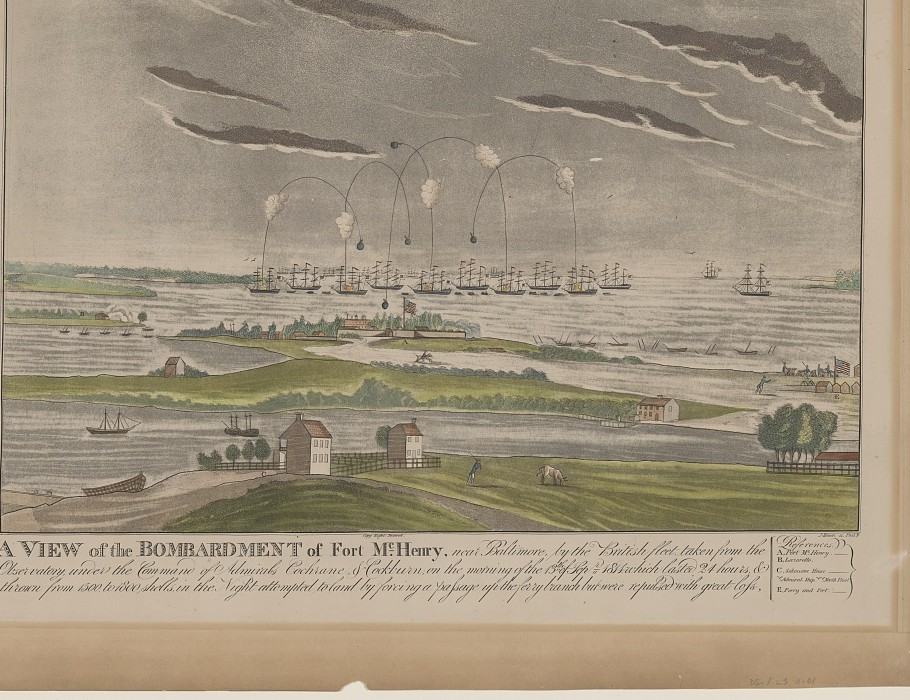

Directions: Work through the five stations in order. Each station holds one record of the road to the War of 1812 or of the war itself. For each record, state which of the war's causes or costs it speaks for. You will build the full file in Part 2 and judge the war from it.
Source: 10th Congress of the United States, Embargo Act, approved December 22, 1807. Text quoted verbatim from the audited TPSP record embargo-act-1807; the edition named in that record is the Statutes at Large, by way of Wikisource. Cuts are marked with ellipses.
"Be it enacted by the Senate and House of Representatives of the United States of America in Congress assembled, That an embargo be, and hereby is laid on all ships and vessels in the ports and places within the limits or jurisdiction of the United States, cleared or not cleared, bound to any foreign port or place; and that no clearance be furnished to any ship or vessel bound to such foreign port or place, except vessels under the immediate direction of the President of the United States . . ."
"And be it further enacted, That during the continuance of this act, no registered, or sea letter vessel, having on board goods, wares and merchandise, shall be allowed to depart from one port of the United States to any other within the same, unless the master, owner, consignee or factor of such vessel shall first give bond, with one or more sureties to the collector of the district from which she is bound to depart, in a sum of double the value of the vessel and cargo, that the said goods, wares, or merchandise shall be relanded in some port of the United States . . ."
File entries. State exactly what the act forbids and what it still allows. Name the one exception in the first section, and explain why the second section demands a bond worth double the vessel and cargo before a ship may sail from one American port to another.
The act is Jefferson's peaceful weapon, aimed at Britain and France without a shot. From the reading, state what the weapon did at home within a year, and why a law written this tightly had to be enforced against Americans themselves.
Source: James Madison, War Message to Congress, June 1, 1812. Text quoted verbatim from the audited TPSP record madison-war-message-1812; the edition named in that record is Founders Online, National Archives, with original spelling preserved. Cuts are marked with ellipses.
"British cruisers have been in the continued practice of violating the American flag on the great high way of nations, and of seizing and carrying off persons sailing under it . . ."
"The practice, hence, is so far from affecting British subjects alone, that under the pretext of searching for these, thousands of American Citizens, under the safeguard of public law, and of their national flag, have been torn from their country, and from every thing dear to them; have been dragged on board ships of war of a foreign nation; and exposed, under the siverities of their discipline, to be exiled to the most distant and deadly climes, to risk their lives in the battles of their oppressors, and to be the melancholy instruments of taking away those of their own brethren. . . ."
"Under pretended blockades, without the presence of an adequate force, and sometimes without the practicability of applying one, our commerce has been plundered in every Sea; the great staples of our Country have been cut off, from their legitimate markets; and a distructive blow aimed at our agricultural and maritime interests. . . ."
"We behold, in fine, on the side of Great Britain a state of war against the United States; and on the side of the United States, a state of peace towards Great Britain."
File entries. Madison ranks impressment first. State what the message says happened to the men taken, in its own sequence, and explain what work the phrase "under the pretext of searching for these" does in the argument.
The closing sentence says Britain has made war and the United States has kept peace. Explain what that framing asks Congress to do, and set it beside the vote that followed, the closest war vote in the nation's history, with every Federalist against.
Source: The account below is a teaching summary written for this lesson from the public record; it is not a period text. Tecumseh spoke in Shawnee through interpreters, and the English accounts of the August 1810 councils that survive differ from one another in wording, so this lesson prints no version of the address as his exact words.
In August 1810 the Shawnee leader Tecumseh came to Vincennes, the capital of Indiana Territory, at the head of a large party of warriors, and met Governor William Henry Harrison in council over several days. The quarrel was land. In the Treaty of Fort Wayne in 1809, Harrison had bought some three million acres from the Miami, Delaware, and Potawatomi nations. Tecumseh came to demand that the cession be given back. His argument, as the council accounts agree in reporting it, was that the land of the West belonged to all Native nations in common, that it had never been divided among them as separate property, and that no one nation, and no few chiefs, could sell what belonged to all. He warned that the nations were uniting to hold that line, and that chiefs who sold land in the future would be punished by the confederacy. Harrison answered that the nations held their lands separately, that the United States would keep what it had bought, and that the president would never accept Tecumseh's claim. Neither man moved. Tecumseh left saying he would go south to bring more nations into the confederacy, and Harrison wrote afterward that war was likely.
File entries. State Tecumseh's claim in the summary's terms, what he demanded about the Fort Wayne cession, and the two points on which Harrison refused him. Whose theory of the land does each man's position rest on?
The source line says this record is a summary and not a quotation, because the surviving accounts differ. Explain why that label protects the reader here, and state what a reader may still rely on this record for, and what the reader may not use it for.
Source: Delegates of the Hartford Convention, Resolutions, January 4, 1815. Text quoted verbatim from the audited TPSP record hartford-convention-resolutions-1815; the edition named in that record is Wikisource. Cuts are marked with ellipses.
"Resolved, That it be and is hereby recommended to the legislatures of the several states represented in this convention, to adopt all such measures as may be necessary effectually to protect the citizens of said states from the operation and effects of all acts which have been or may be passed by the Congress of the United States, which shall contain provisions subjecting the militia or other citizens to forcible drafts, conscriptions, or impressments not authorized by the constitution of the United States. . . ."
"Third. Congress shall not have power to lay an embargo on the ships or vessels of the citizens of the United States, in the ports or harbors thereof, for more than sixty days. . . ."
"Fifth. Congress shall not make nor declare war, nor authorize acts of hostility against any foreign nation, without the concurrence of two-thirds of both houses, except such acts of hostility be in defense of the territories of the United States when actually invaded. . . ."
"Resolved, That if the application of these states to the government of the United States, recommended in a foregoing resolution, should be unsuccessful, and peace should not be concluded, and the defense of these states should be neglected, as it has been since the commencement of the war, it will, in the opinion of this convention, be expedient for the legislatures of the several states to appoint delegates to another convention, to meet at Boston . . ."
File entries. The convention answered the war with amendments. State what the third and fifth amendments would each forbid or require, and name the war measures of 1807 and 1812 that each one is written against.
The first and last resolutions printed here stop short of secession and stop short of loyalty. Explain what the convention actually claims the states may do, and why its report, arriving with the news of Ghent and New Orleans, destroyed the party that wrote it.
Source: Francis Scott Key, The Star-Spangled Banner, September 1814, all four stanzas. Text quoted verbatim from the audited TPSP record star-spangled-banner-1814; the edition named in that record is the Defence of Fort M'Henry broadside, Library of Congress, by way of LibreTexts and Lumen Learning. The text is printed whole, with no cuts.

"O! say can you see by the dawn's early light,
What so proudly we hailed at the twilight's last gleaming,
Whose broad stripes and bright stars through the perilous fight,
O'er the ramparts we watch'd, were so gallantly streaming?
And the Rockets' red glare, the Bombs bursting in air,
Gave proof through the night that our Flag was still there;
O! say does that star-spangled Banner yet wave,
O'er the Land of the free and the home of the brave?
On the shore dimly seen through the mists of the deep,
Where the foe's haughty host in dread silence reposes,
What is that which the breeze, o'er the towering steep,
As it fitfully blows, half conceals, half discloses?
Now it catches the gleam of the morning's first beam,
In full glory reflected now shines on the stream,
'Tis the star-spangled banner, O! long may it wave
O'er the land of the free and the home of the brave.
And where is that band who so vauntingly swore
That the havoc of war and the battle's confusion,
A home and a country should leave us no more?
Their blood has washed out their foul footsteps pollution.
No refuge could save the hireling and slave,
From the terror of flight, or the gloom of the grave,
And the star-spangled banner in triumph doth wave,
O'er the Land of the Free and the Home of the Brave.
O! thus be it ever, when freemen shall stand,
Between their lov'd home and the war's desolation,
Blest with vict'ry and peace, may the Heav'n rescued land,
Praise the Power that hath made and preserv'd us a nation!
Then conquer we must, when our cause it is just,
And this be our motto, "In God is our Trust;"
And the star-spangled Banner in triumph shall wave,
O'er the Land of the Free and the Home of the Brave."
File entries. The first stanza is a question, not a claim. State what Key could and could not know from the British ship where he watched, and what the flag still flying at dawn proved to him. Then name whose bombardment the Bower print above shows, and on what morning.
The third stanza promises that no refuge could save "the hireling and slave." Set that line beside Madison's message at Station 2 and the war in the West at Station 3. Who made up the British force Key is describing, and what does the line ask a reader in 1814 not to think about?
Complete the file from your station work. Then answer the verdict question in a paragraph, defending your judgment from the texts.
| Record | The cause or cost it speaks for | What it claims or demands | Whose war it records |
|---|---|---|---|
| 1. Embargo Act, 1807 | |||
| 2. Madison's War Message, 1812 | |||
| 3. Tecumseh at Vincennes, 1810 | |||
| 4. Hartford Resolutions, 1815 | |||
| 5. The Star-Spangled Banner, 1814 |
The verdict. Did the United States win, lose, or merely survive the War of 1812? Defend your verdict from at least three of the five records, and answer the strongest record for a different verdict.
What does the act forbid, what does it allow, and why the bond? The act lays an embargo on every ship and vessel in American ports bound to any foreign port or place, and it orders that no clearance be furnished to any of them. The single exception in the first section is for vessels under the immediate direction of the President of the United States. The bond in the second section, double the value of vessel and cargo, answers the obvious evasion: a ship cleared for another American port could run for a foreign one, so coastwise trade sails only under a bond, forfeited unless the cargo is relanded in an American port and a certificate proves it.
What did the weapon do at home, and why enforce it against Americans? Within a year American exports had collapsed by about four fifths, New England harbors stood idle, and smuggling ran across the Canadian line and out of coastal coves. A total ban on trade creates its own criminals out of ordinary merchants and sailors, so the law could only work if federal officers, courts, and collectors policed American ports, American ships, and American cargoes. The act's own machinery, clearances refused, bonds demanded, certificates transmitted to the Treasury, is a government reaching into every harbor in the republic, which is what its critics held against Jefferson's party of limited government.
What does the message say happened to the men taken, and what does "pretext" do? The sequence is seizure under a claim, then the reality: thousands of American citizens, sailing under the safeguard of public law and their national flag, were torn from their country, dragged on board foreign ships of war, and exposed under the severities of naval discipline to exile in distant and deadly climates, to fighting their oppressors' battles, and to killing their own brethren. The word pretext does the legal work. Britain claimed a right to search for its own subjects; pretext states that the claim was a cover, and that the practice in fact took Americans, which turns a dispute about British deserters into an attack on American citizenship itself.
What does the closing framing ask Congress to do? The closing sentence declares the war already a fact on one side: Britain has made war on the United States while the United States has kept peace toward Britain. Congress is therefore not asked to start a war but to recognize one and answer it, by opposing force to force in defense of national rights, as the message's later passage puts it. Beside that framing stands the vote: the House and Senate declared war by the closest margins in the nation's history to that date, with every Federalist and most of the commercial Northeast against, so the republic entered the war divided over the very grievances the message ranked.
State the claim, the demand, and the refusals. Tecumseh's claim was that the land of the West belonged to all Native nations in common and had never been divided into separate national property, so no one nation and no few chiefs could sell it. His demand was that the Treaty of Fort Wayne cession of 1809, some three million acres bought from the Miami, Delaware, and Potawatomi, be given back. Harrison refused both points: he held that the nations owned their lands separately and could sell them, and he held that the United States would keep the purchase and that the president would never accept the common property claim. Tecumseh's position rests on a confederacy's theory, land held by the whole; Harrison's rests on a treaty system that treated each nation as a separate seller.
Why does the summary label protect the reader? Tecumseh spoke in Shawnee through interpreters, and the English council accounts that survive were written down by Harrison's side and differ in wording. Printing any one of them inside quotation marks would hand students a translator's reconstruction as if it were a transcript. The label tells the reader exactly what the record is: a summary of the council built from the public record, on which a reader may rely for the occasion, the demand, the argument's substance as the accounts agree in reporting it, and Harrison's refusal, and which a reader may not quote, cite as Tecumseh's words, or use to judge his phrasing. The first question's answers are graded on the summary's content, never on invented quotation.
What would the third and fifth amendments do? The third would bar Congress from laying an embargo on American ships for more than sixty days, written directly against Jefferson's Embargo Act of 1807, which had closed New England's ports for over a year. The fifth would bar Congress from declaring war or authorizing hostilities without two thirds of both houses, except in defense of territory actually invaded, written directly against the declaration of 1812, carried by the closest war vote in the nation's history. Both amendments take a war power the convention's states had suffered under and put a supermajority or a clock on it.
What does the convention claim, and why did the timing destroy its party? The first resolution claims the states may shield their citizens from federal draft, conscription, and impressment measures the convention judged unconstitutional, and the last holds open a second convention at Boston if Washington neglects the states' defense. The convention claims a state right of protection and postpones anything stronger; it does not dissolve the Union. Its report reached the country in the same weeks as the Treaty of Ghent and the news of New Orleans, so amendments meant as a wartime protest read, in peacetime, as disloyalty proved by the calendar. The Federalist Party never recovered its national standing.
What could Key know, and what did the flag prove? Key watched from a British vessel where he had gone under a flag of truce to negotiate a prisoner's release and was held through the bombardment. Through the night he could see the fort only by the glare of rockets and bursting bombs, which is why the first stanza asks its question twice: the flag's survival was the only news available to him. At dawn the banner still waved over the ramparts, which proved the fort had not struck its colors or fallen, and that Baltimore's harbor defense had held. The Bower print shows the British fleet's bomb ships throwing shells over Fort McHenry on the morning of September 13, 1814.
Who is the "hireling and slave," and what does the line screen out? The phrase aims at the British force before Baltimore: hireling for the professional soldiers and German auxiliaries Britain was accused of hiring, and slave, in the reading most historians give the line, for the enslaved men who had escaped to the British and served in units such as the Corps of Colonial Marines. Set beside Station 2, the line is an answer to impressment's grievance written from the other side of the flag. Set beside Station 3, it asks the reader of 1814 to celebrate a land of the free without weighing the enslaved people who had taken Britain's offer of freedom for arms, the same offer Dunmore had made in the previous war, or the Native nations then fighting beside Britain for their own land in the West.
| Record | The cause or cost it speaks for | What it claims or demands | Whose war it records |
|---|---|---|---|
| 1. Embargo Act, 1807 | The cost of avoiding war: trade stopped by the republic's own law. | That no American ship sail abroad, and that coastwise trade move only under bond. | Jefferson's and Congress's: a peaceful weapon enforced on Americans. |
| 2. Madison's War Message, 1812 | The causes: impressment first, then the blockades that plundered commerce. | That Britain has already made war, and Congress should answer force with force. | Madison's administration, and the sailors and merchants named in it. |
| 3. Tecumseh at Vincennes, 1810 | The western cause: land cessions the confederacy held void. | That the Fort Wayne cession be returned and no nation sell the common land. | Tecumseh's confederacy, answered by Harrison for the United States. |
| 4. Hartford Resolutions, 1815 | The home cost: embargo, drafts, and a war New England opposed. | Amendments capping embargoes and requiring two thirds to declare war. | New England Federalists, claiming the states may shield their citizens. |
| 5. The Star-Spangled Banner, 1814 | The war survived at Baltimore, and the flag made its proof. | That the banner still waves over the land it names free and brave. | Key's, watching for the fort, and the garrison whose flag he saw. |
Verdict grading guide. All three verdicts can earn full credit when defended from the records. Won rests on Madison's message answered in fact: the republic fought Britain a second time and kept its independence, its flag, and its government, and on the Banner as the proof the culture kept. Lost rests on the file's paper record: the embargo ruined American trade before any shot, Ghent settled none of the stated causes, and the Hartford amendments show a section driven to rewrite the Constitution against its own government. Merely survived rests on Ghent's restoration of 1811 beside the war's costs, Washington burned and the West's confederacies broken, with the causes dying of Napoleon's defeat rather than American arms. A verdict that ignores the strongest opposing record, Ghent's silence for a claim of victory, or New Orleans and the Banner for a claim of loss, has done half the task.